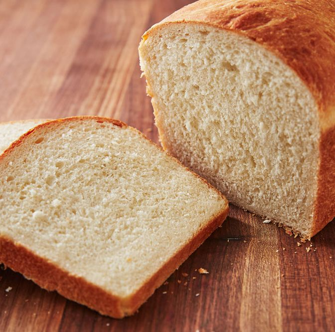

Golden Bread

Description
This is my go-to bread recipe. Found it in some cookbook or another years ago, so something has probably been lost in translation somewhere.
It's never let me down however, and it can tweaked in whatever ways you want once you have the dough. This bread is fire, yo.
Note that this assumes you have some kind of stand mixer. You could theoretically do it all by hand and get the same result, of course. But that's a lot of extra work, man.
Ingredients:
- 3.5 cups of all purpose or bread flour.
- 2 teaspoons instant dried yeast. Packets of the stuff can be found in any grocery store, and one packet will contain the exact amount you need for this and most other bread recipes.
- 1 tablespoon sugar.
- 2 teaspoons salt.
- 2 tablespoons cold butter.
- 2 eggs.
- 1 cup milk, lukewarm. I have used both cold milk and warm milk here, and though the warm milk definitely lets the dough rise more, the bread has ultimately turned out more or less the same for me.
- Addiontal soft butter for greasing.
Steps:
- Combine all ingredients into standmixer bowl. The only caveat would be to try to keep the salt away from the yeast initially. I don't think it makes a difference, but it's something my grandmother always swore by, and when has a grandparent ever been wrong about anyting?
- Using the dough hook attachment for the standmixer, let it run on a low setting for several minutes, or until ingreidents have combined to form a ball of dough.
Here you can add additional flour or water to the mixture if it is too wet or dry, respectively. It's not an exact science, you just kinda have to figure it out by trial and error.
- Once dough is properly formed, remove it from the standmixer and lay it out on a flat, floured surface. Knead it by hand to ensure it feels right and that all ingredients are properly combined. Form it into the approximation of a ball-like shape.
- Grease a large bowl with butter (or the oil of your choosing, it doesn't matter so much in my experience) and place the dough into it. Then cover the bowl with a clean towel or plastic cling wrap.
- Place bowl in a warm, dry place and let the dough proove (aka let the yeast do its thing) for at least 2 hours. Depending on tons of factors, it could take much longer, but it shouldn't take more than 4 hours.
- When dough has proven, remove it from the bowl, place on a floured surface, and deflate it. Form it back into a ball and cover it again, letting it rest for about 20 minutes.
- The dough should have puffed up again considerably. Roll it out on the floured surface and form it into your desired shape. This is the shape the baked bread will take. You can do just about anything you want here and it will all turn out fine.
- Place the shaped dough into a greased baking dish and cover, letting the dough rise again for about 2 hours.
- After giving the dough time to rise again, preheat oven to 350 degrees F / 176 degrees C. Bake for approx. 40 minues.
- When bread is done, it should slide out of the baking dish effortlessly. Rap the bottom with your knuckles. If there is a hollow kind of sound, the bread is quite done.
- Either let it cool or slice it into right away. If you let it cool down first the bread will stay fresh and softer longer. But if you're like me, it won't last long enough for that to matter, so slice it up immediately and enjoy that glorious hot bread.
Notes:
- At step 6, feel free to add any dry ingredients you'd like to the dough. Nuts, fruit, diced garlic, caramalized onions, etc. The sky is the limit!
- Before placing the bread in the oven, you can optionally brush the top with melted butter and/or give it an egg wash. This will enhance the flavor and give the crust a much shinier, golden appearance.
Return to Homepage